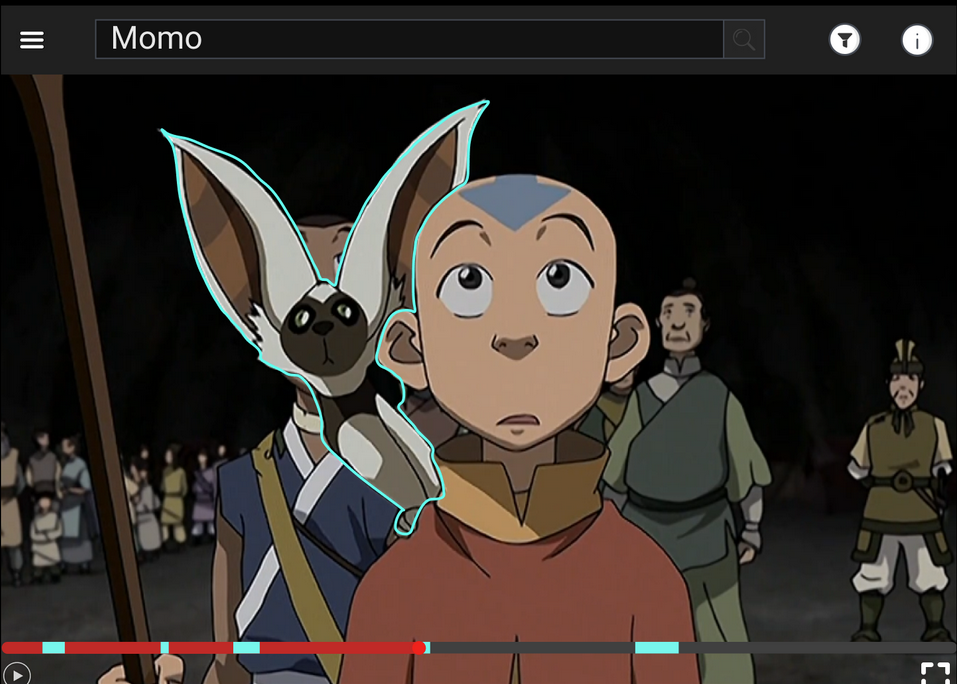
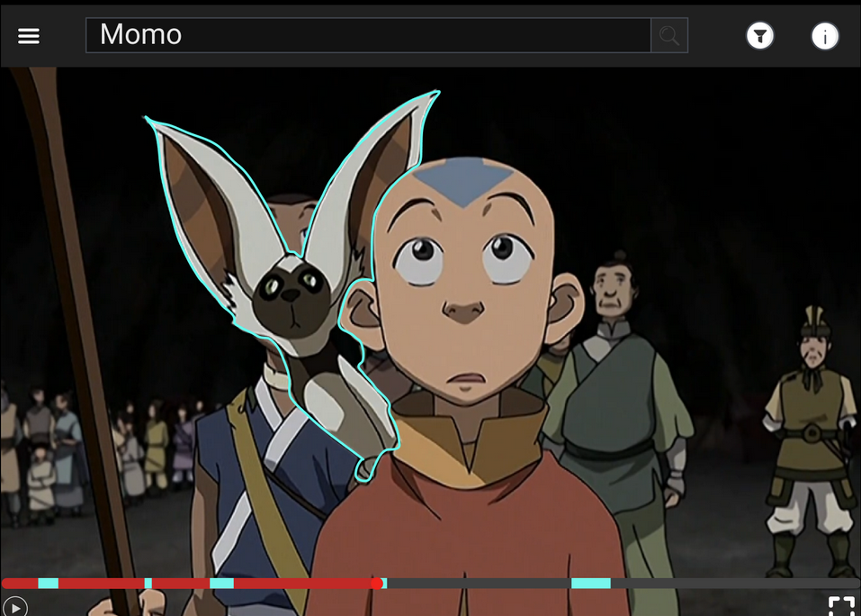

Current Design
Current Design

| Feature | Description | Progress | Example (if applicable) |
|---|---|---|---|
| Image Classification Model | Deep CNN model to classify characters present in a frame from Avatar - The Last Airbender | On Going | |
| Video Querying | Users will be able to write custom queries to search for characters or events in Avatar - The Last Airbender episodes | Ongoing |
Current Design  |
| Character and Episode Mapping | Users will be able to see what characters and events happen in an episode before they watch the episode. | Ongoing |
Current Design
|